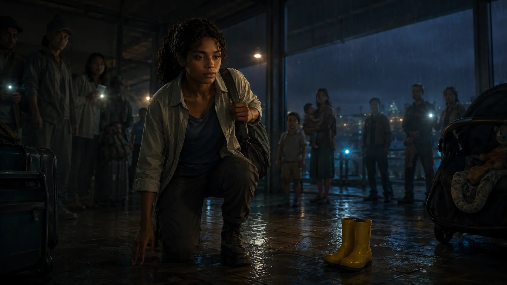
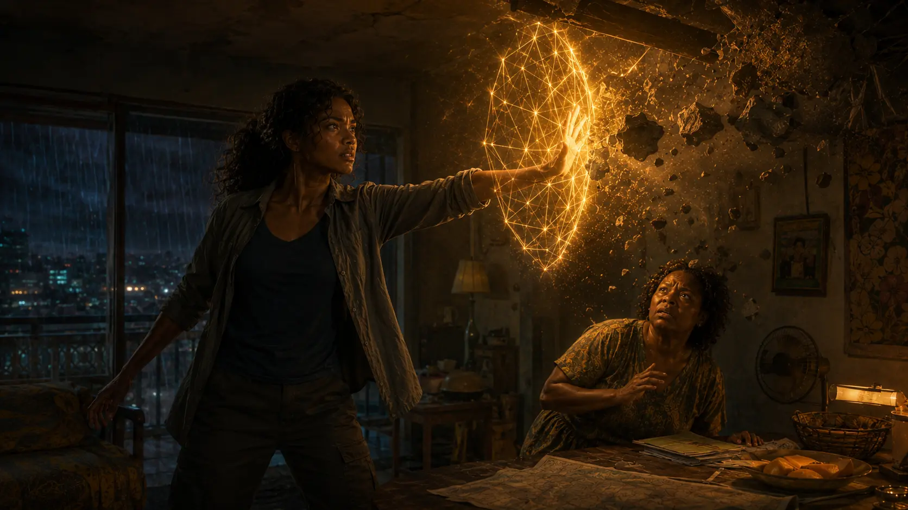

Ordinary skill
She sees handoffs
Cold chains, queues, blocked exits, missing information and the people whom a system has pushed below its line of sight. Logistics gives her attention a practical shape.
A Port Moresby medical-logistics coordinator who can find the next safe action inside a system in panic. When that attention opens onto something vast, she learns that power is not what she can hold—it is what she can return from without owning anyone.
Cold chains, queues, blocked exits, missing information and the people whom a system has pushed below its line of sight. Logistics gives her attention a practical shape.
Nara reads patterns quickly, but she is not omniscient. Her credibility comes from letting a wrong explanation die when another person gives her better evidence.
She tries to prevent every future harm by becoming indispensable. Her deepest temptation is usefulness without limit: everyone protected, nobody permitted to carry her.

Nara lives with her mother, Dr. Adaeze Okafor, a flood and structural-resilience engineer whose care is practical, exact and never automatic. Adaeze is the first person to see Nara’s saviour instinct clearly—and the first to tell her that grammar matters: she does not save people alone; she helps people carry one another.
Her father is an absence made too deliberate to be accidental. Nara wants the truth, but not a destiny that turns her ordinary life into a waiting room for somebody else’s plan.
Nara cannot force love, repentance, healing, understanding, merging or a change of purpose. Fear, exhaustion and a coerced agreement are not permission.
She can shield a body, redirect force, evacuate people, expose evidence or break a weapon. The attacker does not own a veto over somebody else’s survival.
Empathy can be accurate and still wrong. Hidden facts require testimony, evidence, inference, technology, memory or granted access. Nara must verify.
Nara’s first visible power is not a generic force field. It finds anchor points, traces relationships and gives weight another path. The physical geometry is the visual form of her moral method: protect without becoming the only structure holding.
As her reach grows, the same logic can operate across people, machines, institutions and unfamiliar forms of consciousness. Scale never cancels the law.

She always calls herself Nara. The embodied woman who makes mistakes, loves particular people, cracks eggs and returns is not a lesser version of the cosmic one.
A name others may use when Nara’s highest coherence becomes visible. It is not possession, a second identity or an ethical exemption. The greater the resonance, the greater the danger of losing the boundary that makes I mean Nara.
Observation, courage, logistics and human coordination. Every success remains physically ordinary until the first gold appears.
Noise drops within a small radius. Willing minds can stabilize briefly, but Nara cannot manufacture willingness.
Golden load paths, shields, redirection, stabilization and non-destructive disassembly, followed by real recovery.
Coordination across cities, networks and artificial-person questions. Systems need governance, not perfect speeches.
Planetary and cosmic protection, still fallible, still embodied somewhere, still forbidden to override.
Not a combat tier. The closest Nara can move toward completion while remaining a separate centre able to choose return.
Tremor, missing nouns, lost colours, sensory after-images, emotional backwash, motor disruption, broken time sequence, memory gaps and attraction toward completion.
Water, food, handwriting, music, repetitive work, sleep, safe touch that begins with a question, and time with people who know Nara rather than only the light.